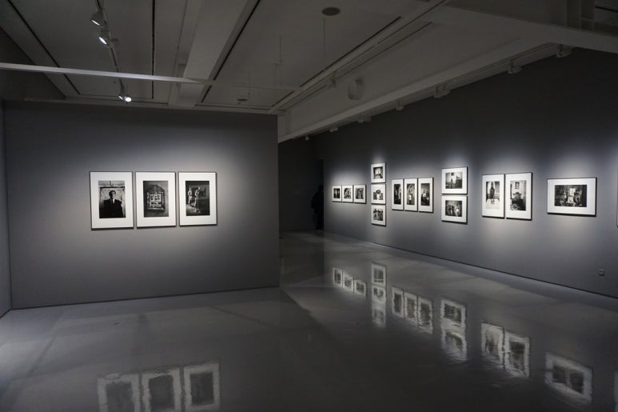

을유 연재
-
 책을 쓰는 과학자들
책을 쓰는 과학자들#5. “새들은 다 어디로 갔을까?”
『과학혁명의 구조』가 학계에 큰 영향을 주었다면, 같은 해에 출간된 또 다른 책은 전 세계에 더욱 막대한 영향력을 떨치고 대중에게 비교적 생소한 과학적 탐구 주제였던 환경주의를 소개했다. 공공 정책을 변화시키고 사람들의 전반적인 인식 수준도 높인 이 책이 수백만 명의 죽음에 간접적인 책임이 있다고 주장하는 사람들도 있다. 또한 이 책의 저자는 여성이었다. 1907년 미국 펜실베이니아 스프링데일에서 태어난 해양생물학자 레이철 카슨Rachel Carson은 『침묵의 봄Silent Spring』(1962) 이전에 해양 생물에 관한 저서를 두 권 썼고, 꽤 큰 성공을 거두었다.
-
 쇼팬하우어의 행복론과 인생론
쇼팬하우어의 행복론과 인생론#6. 삶의 공허함과 무의미함을 극복하는 법
모든 동물, 특히 인간은 이 세상에 존재하고 계속 살아가기 위해서는 의지와 지성 사이에 얼마간의 적합성과 균형을 유지하는 것이 필요하다. 그런데 자연이 이 적합성과 균형을 더 정확하고 더 올바르게 맞출수록 인간은 더 쉽고 더 확실하고 더 쾌적하게 이 세상을 헤쳐 나갈 것이다. 사실 올바른 균형점에 단순히 가까워지는 것만으로 이미 그는 파멸을 피하기에 충분하다. 따라서 앞서 말한 균형의 올바름과 적합성의 한계 내에서 어느 정도의 폭이 존재한다. 여기에 적용되는 기준은 다음과 같다.
-
마법의 비행
#5. 외향 충동: 비행을 넘어서
나는 취리히의 호텔방에서 이 글을 쓰고 있다. 이곳에서 나는 영감을 자극하는 회의에 참석하고 있다. 인류가 달에 첫발을 디딘 50주년을 기념하기 위해서 과학자, 록 음악가, 우주 비행사가 모인 스타무스(STARMUS)라는 회의였다. 참석한 우주 비행사 중에는 미국 아폴로 계획에 참여한 이가 많다. 달 표면을 걸은 이들도 있다. 그들은 한 명씩 연단에 올라서 우주로 나아가고, 달 표면을 걷고, 무중력 상태로 떠다니고, 새까만 우주에 떠 있는 지구를 바깥에서 바라본 경험이 자신의 삶을 바꿔 놓았음을 유창하게 말했다. 그들은 대부분 전투기 조종사 자격증이 있는 사람들이다. 대체로 전투기 조종사는 시인 기질이 없고, 감정적이지 않다고 알려져 있으므로, 그들의 증언은 더욱 감동적이다. 나는 그들이 에이릭손, 마젤란, 드레이크, 콜럼버스 등 지난 세기들의 위대한 해양 탐험가들의 후계자라고 본다. 더 감명적으로 말하자면, 카누를 타고 드넓은 태평양을 항해하여 차례로 섬들에 정착한 폴리네시아인들의 후계자들이다. 그들은 멀리 외따로 떨어져 있는 이스터섬까지 들어갔다. 아마 그들에게는 달을 탐험하는 일과 비슷했을 것이다.
-
현대 예술의 거장
7화. 그는 죽었어요, 시장의 관점에서는요
언젠가 메이플소프는 프랫의 룸메이트였던 해리 맥큐에게 말했다. 자신은 명성을 위해서라면 영혼도 팔 의향이 있다고 말이다. 그래서 그는 궁지에 처한 자신의 현실이 지닌 아이러니를 이해하지 않을 수가 없었다. 에이즈에 관한 소문이 자신의 평판을 망칠 거라는 그의 두려움과는 반대로,